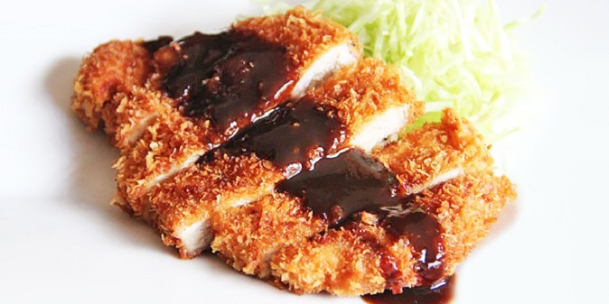

Chicken Katsu

Description
Chicken Katsu is a crispy, delicious Japanese style fried chicken.
The recipe is simple, easy to cook, and tastes delicious. Eat with rice, your favorite greens,
and your choice of sauce - our favorite is Tonkatsu sauce!
Ingredients
- chicken breast
- Panko bread crumbs
- eggs
- flour
- salt
- pepper
Directions
- Prepare the ingredients; Using 3 separate bowls, pour 2 cups of flour into one bowl, beat 3 eggs in the second bowl, and pour 2 cups of Panko bread crumbs into the third.
- Coat the chicken; Dip a chicken breast into the flour, coating both sides.Then, take it out and dip it into the bowl of eggs, again making sure to coat both sides. Finally, place the chicken in the Panko bowl, ensuring that the whole piece of chicken is thoroughly covered.
- Cooking the chicken;Using a pan or bowl of oil, fry the chicken until both sides are a crispy golden/brown. (Note: It is important to make sure the oil is hot enough; if it doesn't cook quickly enough, the chicken will absorb the oil and become too wet. We recommend that the oil is hot enough to make a pinch of flour sizzle when thrown into the oil.